Welcome to the guide! We will be walking you through the process of installing an AWS server.
Begin by logging into you AWS account
From the management console, navigate to Launch a virtual machine with EC2
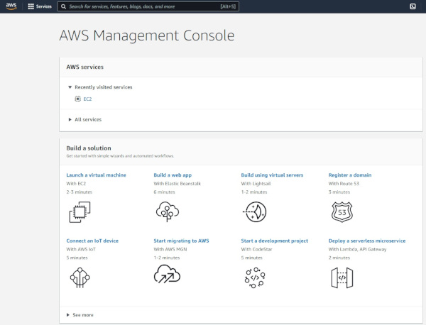
Scroll down to to Ubuntu Server 20.04 and click select
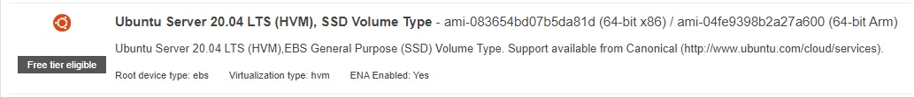
Select t2 (free tier in our case)
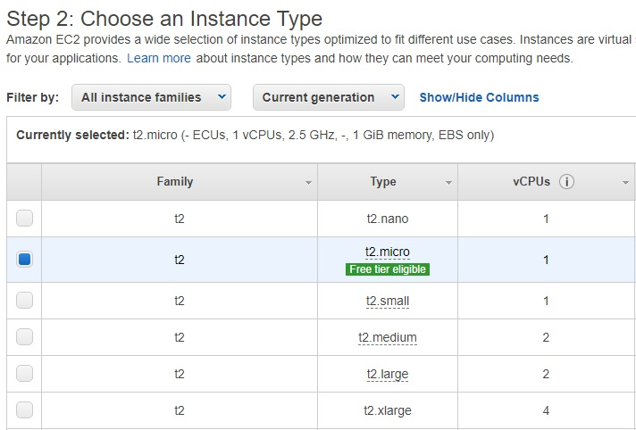
Select Review and Launch
Click Launch
Create new key pair, name the key someything memorable, click download. This will create a .pem file. Remember where you put it! We will use it later.
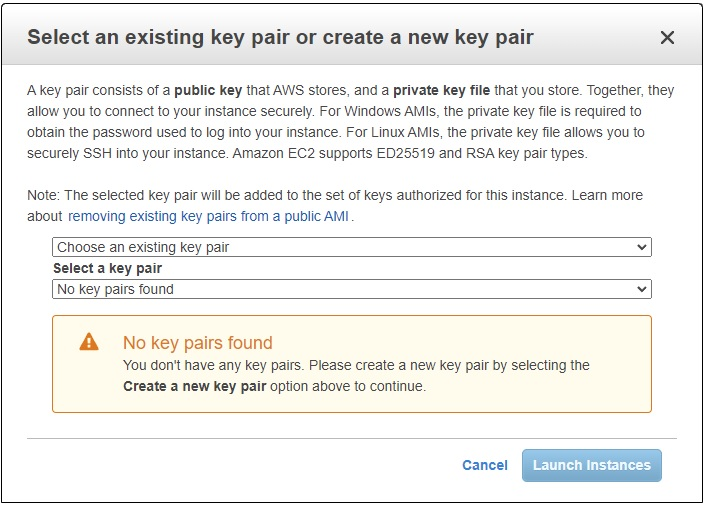
Click Launch, then View instances on the bottom right.
Click the checkbox next to your new server. In the window below under Public IPv4 address click the copy image. You can keep this page open just in case you loose your IP that is copied. We will need this later on in this guide
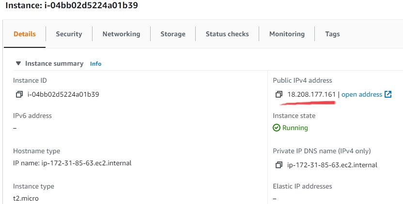
Next we will modify security settings to allow your server to be accessed. On the left hand panel navigate to Security Groups.
Click on the secuity group ID of the new server. Most likely it will be named launch-wizard-1.
On the top right click
actions and select inbound rules.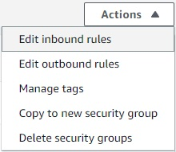
Click add rule then change custom TCP to HTTP. In the search bar to the right, select 0.0.0.0/0, save the rules and we can move on!
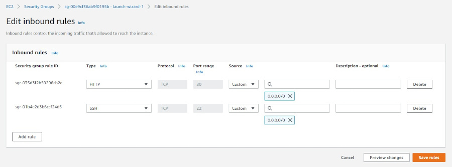
Success! You have gotten your server up and running! You can access it by inputting the IP address into your browser. At the moment nothing will show up until we install Apache2 onto the server. For this we will use PuTTy.
Install PuTTy. You want the first link at the top of the page.
Puttygen should have been installed as part of the PuTTy package. Find and run the application.
Click load
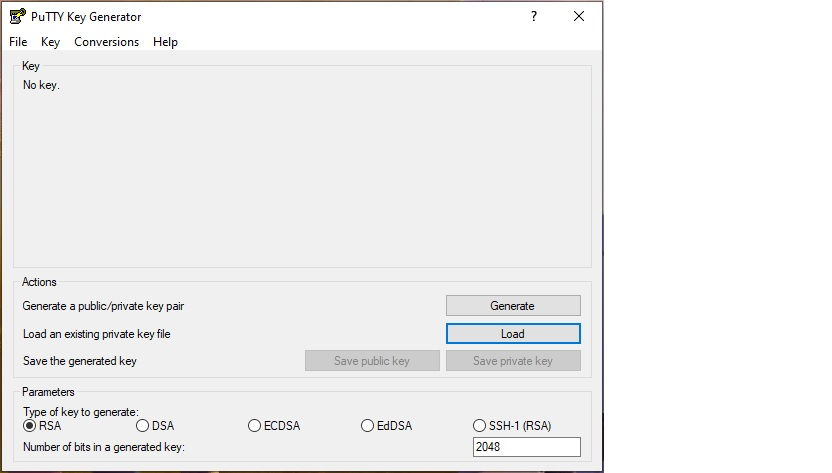
Find your .pem file. You will most likely have to change .ppk files to all files.
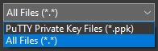
Click save private key.
For simplicity name it the same as the .pem file. You can now close PuTTygen.
Next we will run the PuTTy application.
on the left click the plus next to SSH, then click on Auth. Click browse and find the new .ppk file you created with PuTTygen.
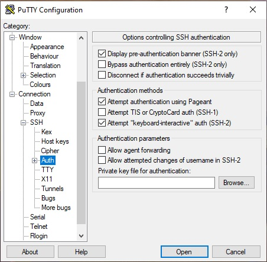
Now click on session at the top and to the left. Under host name place your IP address for the server you created. Hopefully it is still copied! Click open and you will get a PuTTy security alert. Select Accept.
Since we made the server using ubuntu, your user name is 'ubuntu' a list to user names based on operating system is provided below if you want to use this guide again for another AMI.
For Amazon Linux 2 or the Amazon Linux AMI, the user name is ec2-user.
For a CentOS AMI, the user name is centos or ec2-user.
For a Debian AMI, the user name is admin.
For a Fedora AMI, the user name is fedora or ec2-user.
For a RHEL AMI, the user name is ec2-user or root.
For a SUSE AMI, the user name is ec2-user or root.
For an Ubuntu AMI, the user name is ubuntu.
For an Oracle AMI, the user name is ec2-user.
For a Bitnami AMI, the user name is bitnami.
Next we will install apache2
Start with 'sudo apt update'
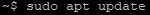
Next run 'sudo apt install apache2' and enter 'Y' when asked to continue.
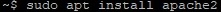
From here we will restart and check the status of your apache2 server. Enter the following commands.
'sudo systemctl restart apache2'
'sudo systemctl status apache2'
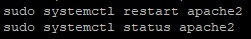
You should see that your new server is active and running. To exit this dialog input ctrl+C.
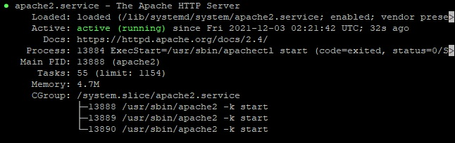
Next we will navigate to your webroot folder and clone your github repo in to the folder.
Type 'cd /var/www/html'
type 'sudo git clone <github url>'
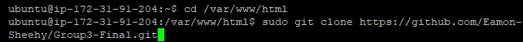
if you navigate to your ip address that was assigned earlier and add /the name of your projects folder you will be taken to the page.
Congratulations! You have successfully set up your own public server through AWS.